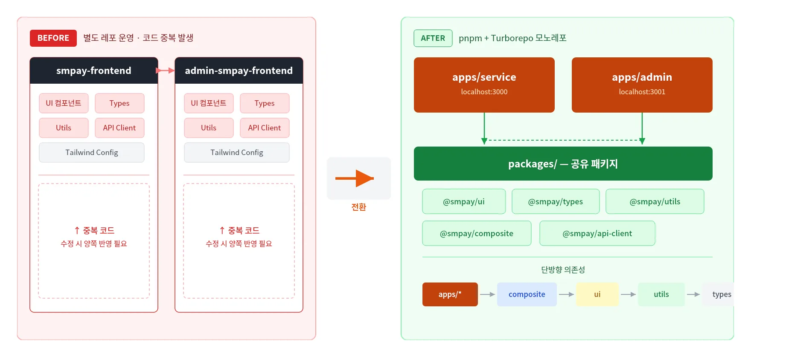
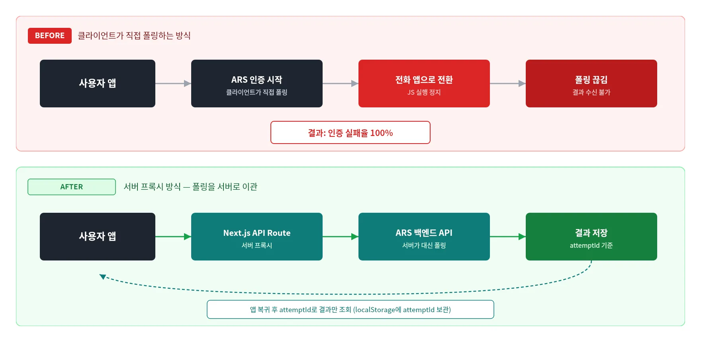
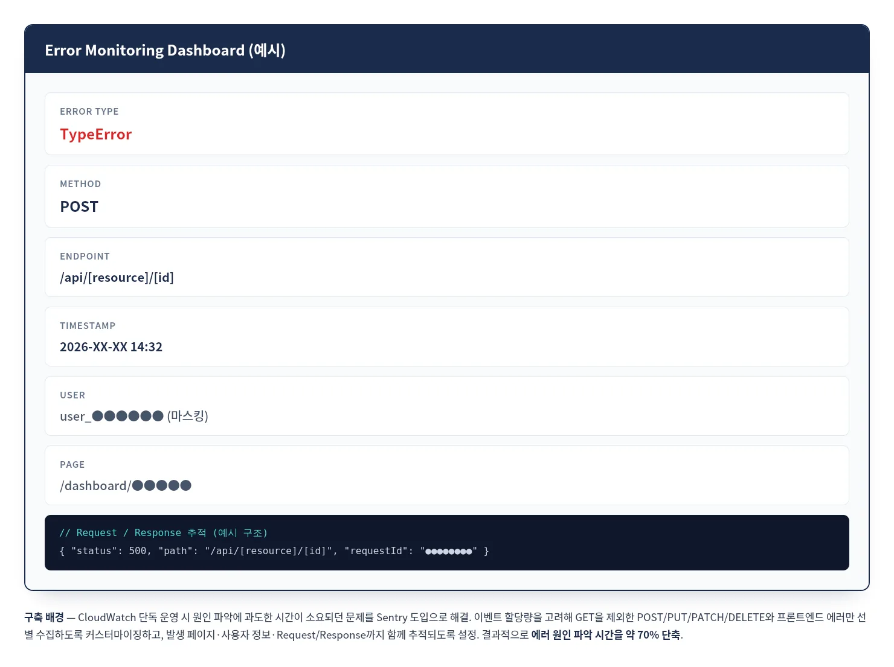

SM PAY · 써치엠 · 2025.04 ~ 재직중
핀테크 광고 플랫폼의 배포 구조를 다시 설계하다
모노레포 전환 — 코드 중복을 구조로 해결하다
배경 — 서비스 앱과 어드민 앱을 별도 레포로 운영하며 시작했지만, 기능이 늘어날수록 컴포넌트·타입·API 인터셉터가 두 레포에 중복되기 시작했습니다.
판단 — pnpm + Turborepo 기반 모노레포로 구조를 전환하고, 공유해야 할 것과 앱별로 남겨야 할 것을 먼저 구분했습니다.
트레이드오프 — 전환 후 CI/CD가 각각 독립 빌드되며 이중 빌드 문제가 새로 생겨, Remote Cache와 git diff 기반 Selective Build로 해결했습니다.

⚠ 재현 다이어그램 — 실제 레포 구조·패키지명은 예시로 재구성
모바일 ARS 인증 실패 — 폴링을 서버로 이관하다
배경 — Galaxy 등 일부 모바일 기기에서 전화 앱으로 전환하면 JS 실행이 정지되어 클라이언트 측 폴링이 끊기고, 인증 결과를 받지 못해 실패율 100%가 발생했습니다.
해결 — Next.js API Route 프록시를 도입해 서버가 백엔드 ARS API를 대신 호출하고 결과를 저장하도록 구조를 변경했습니다. 클라이언트는 앱 복귀 후 attemptId로 결과만 조회하면 되도록 만들어, 폴링 자체를 서버로 이관했습니다.

⚠ 재현 다이어그램 — 실제 코드·화면 미사용
프론트엔드 모니터링 체계 — 단계적으로 고도화하다
배경 — FE 로그 관리가 없어 오류 발생 시 원인 파악이 어려웠고, Slack 알림 연동 후에도 메시지가 시간이 지나면 소실됐습니다.
해결 — CloudWatch → Slack → Sentry 순으로 단계적으로 개선했습니다. 이벤트 한도를 고려해 GET을 제외한 POST/PUT/PATCH/DELETE와 FE 에러만 선별 수집하고, 발생 페이지·사용자 정보·Request/Response까지 노출되도록 커스터마이징했습니다.

⚠ 재현 목업 — 실제 데이터·화면 아님